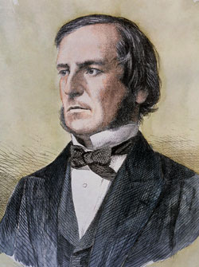
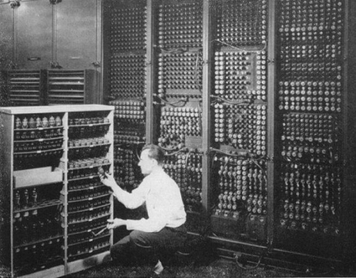
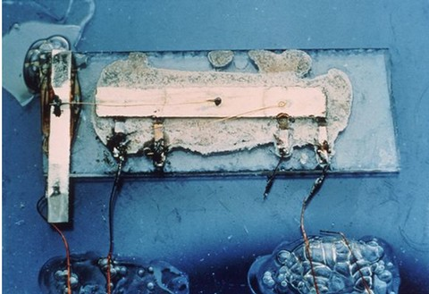

1. Introducción: de lo analógico a lo digital
No cabe duda de que en el mundo de hoy en día la Electrónica juega un papel de vital importancia. En la Unidad anterior has estudiado la electrónica analógica, que permite infinidad de aplicaciones. Recuerda que un circuito analógico puede funcionar con diversos rangos de tensiones.
Sin embargo, en los circuitos digitales sólo hay 2 voltajes. Esto significa que al utilizar 2 estados lógicos se puede asociar cada uno con un nivel de tensión, así se puede codificar cualquier número, letra del alfabeto u otra información. Estos 2 estados de tensión reciben diferentes nombres, los más utilizados son estado lógico 0 y estado lógico 1, o bien falso y verdadero, respectivamente.
Al utilizarse sólo dos estados lógicos (0 y 1) se dice que la lógica digital es binaria, ya que el código binario se basa en la utilización de dos únicas cifras, 0 y 1. Una de las principales ventajas de este sistema es la sencillez de sus reglas aritméticas, que hacen de él un sistema apropiado para el uso de computadores y dispositivos digitales.
Hoy en día, la palabra "digital" aparece en multitud de situaciones, y siempre asociada a cosas novedosas. Así, por ejemplo, encontramos expresiones como "sonido digital", "mundo digital" o "información digital". Y, a veces, no entendemos qué significa ese "apellido" de "digital". Pero debe ser importante, porque aparece en muchas situaciones.
En 1854, el matemático inglés George Boole publica "Las leyes del pensamiento", donde da a conocer el álgebra que lleva su nombre. Este álgebra permite explicar las leyes fundamentales de aquellas operaciones de la mente humana por la que se rigen los razonamientos.
En 1938, el matemático Claude Shannon demostró cómo las operaciones booleanas elementales se podían representar mediante circuitos eléctricos, y cómo la combinación de circuitos podía representar operaciones aritméticas y lógicas complejas. Además demostró que el álgebra de Boole se podía usar para simplificar circuitos conmutadores. La unión entre la lógica de Boole y la electrónica ya se había conseguido.
En 1942 funcionó la ABC, la primera computadora digital, y en 1946 se terminaba la ENIAC, primera computadora electrónica de propósito general.
En 1958 aparece el primer circuito integrado (Jack Kilby fue su autor), y con él la revolución en este campo. Los circuitos integrados se adaptaron perfectamente a la lógica digital.
Las aplicaciones más representativas de la electrónica digital son:
- Sistemas de control industrial (controladores o autómatas programables).
- Equipos de proceso de datos (tratamiento de datos, ordenadores).
- Otros equipos y productos electrónicos (electrodomésticos, alarmas, etc.).
Obra publicada con Licencia Creative Commons Reconocimiento No comercial Compartir igual 4.0